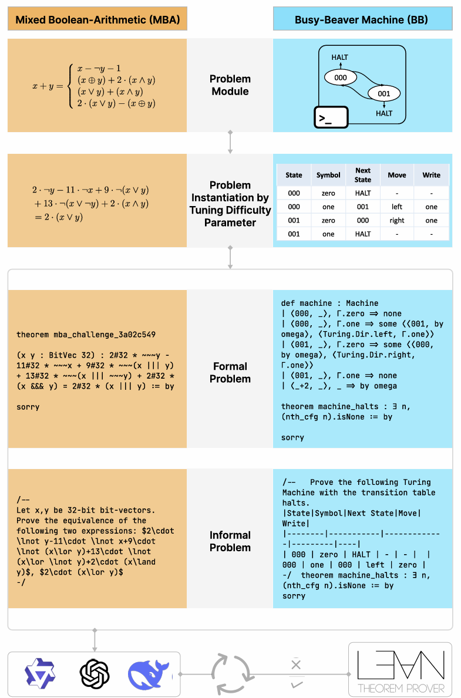
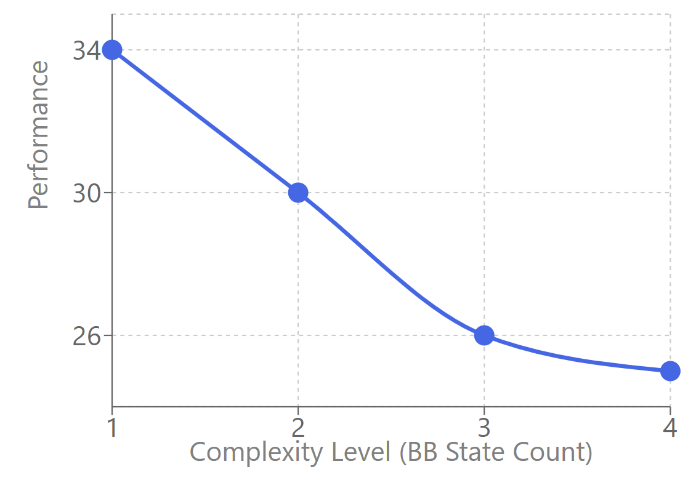

Synthesizes theorem-proving challenges with parallel Lean 4 formal and Markdown informal specifications from theoretical computer science problems.
Abstract
Formal theorem proving (FTP) has emerged as a critical foundation for evaluating the reasoning capabilities of large language models, enabling automated verification of mathematical proofs at scale. However, progress has been constrained by limited datasets due to the high cost of manual curation and the scarcity of challenging problems with verified formal-informal correspondences. We propose leveraging theoretical computer science (TCS) as a scalable source of rigorous proof problems, where algorithmic definitions enable automated generation of arbitrarily many challenging theorem-proof pairs. We demonstrate this approach on two TCS domains: Busy Beaver problems, which involve proving bounds on Turing machine halting behavior, and Mixed Boolean Arithmetic problems, which combine logical and arithmetic reasoning. Our framework automatically synthesizes problems with parallel formal (Lean4) and informal (Markdown) specifications, creating a scalable pipeline for generating verified proof challenges. Evaluation on frontier models reveals substantial gaps in automated theorem proving: while DeepSeekProver-V2-671B achieves 57.5% success on Busy Beaver problems, it manages only 12% on Mixed Boolean Arithmetic problems. These results highlight the difficulty of long-form proof generation even for problems that are computationally easy to verify, demonstrating the value of TCS domains for advancing automated reasoning research.
Problem
Progress in formal theorem proving evaluation is constrained by limited datasets due to high curation costs and scarcity of challenging problems with verified formal-informal correspondences.
Approach
The authors leverage theoretical computer science as a scalable source of proof problems. They focus on two domains: Busy Beaver problems (proving bounds on Turing machine halting behavior) and Mixed Boolean Arithmetic problems (combining logical and arithmetic reasoning). Expert-defined templates automatically synthesize problems with parallel formal (Lean 4) and informal (Markdown) specifications.

Figure 1: Overview of our synthesis framework: A problem is instantiated using expert-defined templates to generate theorem-proving challenges, with the formal description in Lean4 and the natural language description in Markdown.
Results
DeepSeekProver-V2-671B achieves 57.5% on Busy Beaver problems but only 12% on Mixed Boolean Arithmetic. Performance degrades with BB complexity. Error analysis shows 67.27% of errors are irrelevant hallucinations and 23.22% are tactic misuse.

Figure 2: Performance degradation as BB complexity increases for best-performing DeepSeek-Prover-v2-671B